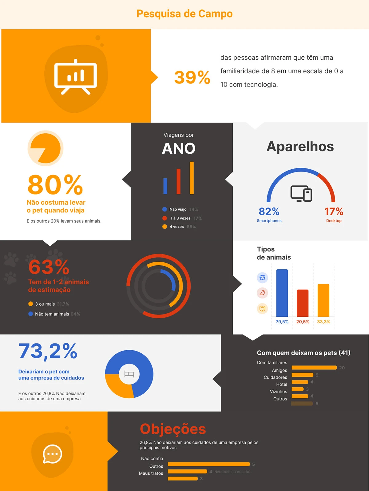
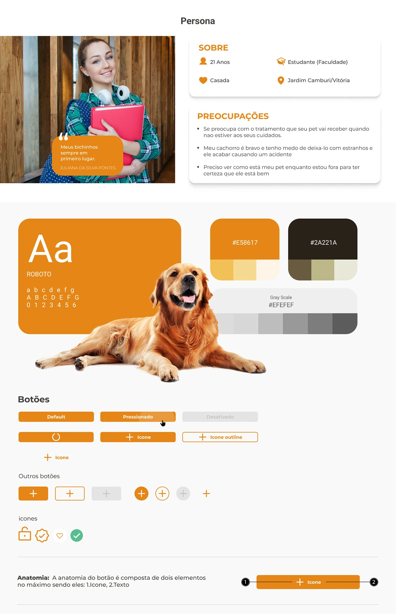
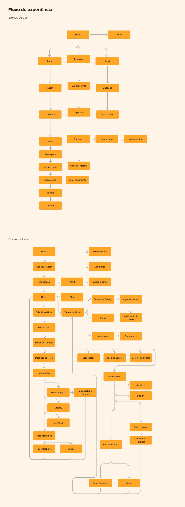
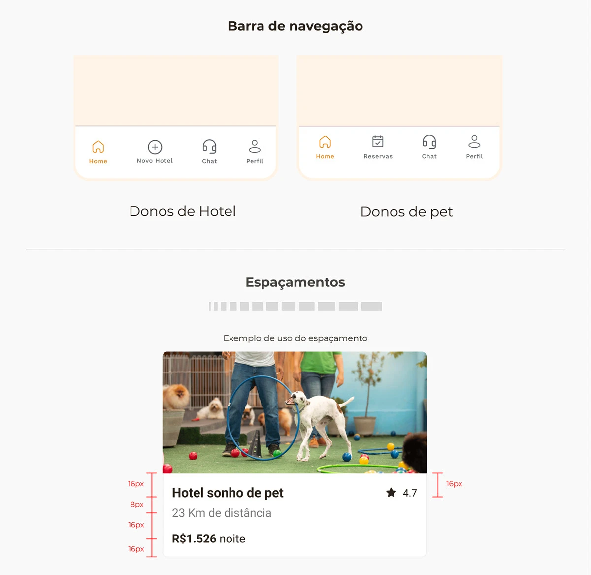
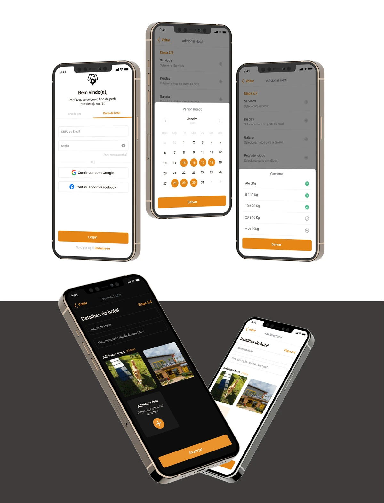

- O problema
- Hotéis para pet existem, mas pouca gente sabe onde encontrar, e muitos donos não confiam em deixar o animal com estranhos.
- O que eu fiz
- Pesquisa com 41 donos de pet, persona, fluxos para os dois lados do app (dono de pet e dono de hotel), guia de estilo e interface.
- O que eu aprendi
- O app não disputa espaço com outros hotéis. Ele disputa com a família, que é com quem as pessoas já deixam o pet hoje.
O briefing
Muita gente adotou um animal durante a pandemia. Com a volta dos compromissos fora de casa, apareceu um problema novo: onde deixar o pet numa viagem? Hotéis para pet existem, mas ainda são pouco conhecidos.
A proposta do professor era um aplicativo ou site que reunisse esses hotéis e facilitasse a reserva. Antes de desenhar qualquer tela, eu quis entender se o problema era mesmo encontrar o hotel.
A pesquisa
Fiz um formulário online para donos de pet e recebi 41 respostas. Perguntei como eles viajam, com quem deixam o animal e se deixariam com uma empresa.
não costumam levar o pet quando viajam. A necessidade de deixar o animal com alguém existe.
deixariam o pet com uma empresa de cuidados. Os outros 27% não deixariam.
marcaram smartphone na pergunta sobre aparelhos, contra 17% que marcaram computador.
Duas coisas mudaram o rumo do projeto. A primeira: quem não deixaria o pet com uma empresa citou desconfiança e medo de maus-tratos. A segunda: a resposta mais comum para "com quem você deixa o pet hoje" foi a família, bem à frente de hotéis.
Ou seja, o app não compete com outros hotéis. Compete com a mãe, o irmão ou o vizinho, que a pessoa já conhece. Ele precisa passar a mesma segurança.
O dado do celular também reforça a escolha por um app mobile, em vez de um site.

Para quem
Montei a persona a partir das respostas: uma estudante de 21 anos, casada, que mora em Jardim Camburi, em Vitória. As preocupações dela são as mesmas que apareceram na pesquisa.
- Como o pet vai ser tratado quando ela não estiver por perto.
- O cachorro é bravo com estranhos, e ela tem medo de que aconteça um acidente.
- Ela quer ver como o pet está enquanto viaja, para ter certeza de que está tudo bem.

Dois apps em um
Um app de reserva tem dois lados: quem reserva e quem recebe. Desenhei os fluxos dos dois. O dono do pet busca, escolhe, reserva e paga. O dono do hotel cadastra o hotel e acompanha as reservas.
O chat aparece na barra principal para os dois públicos. É a resposta mais direta à preocupação da persona: poder perguntar como o pet está a qualquer momento.


A interface
A lista de hotéis mostra foto, distância, nota e preço da diária. A tela "Minhas reservas" reúne as estadias do usuário, e o login aceita conta Google ou Facebook, para não exigir mais uma senha.

O que eu faria diferente
Olhando hoje, a pesquisa apontou a confiança como o maior obstáculo, mas a interface ainda trata o hotel como um produto comum.
Mostrar sinais de confiança na lista, não só preço
O card do hotel mostra nota, distância e preço. Para quem tem medo de maus-tratos, isso não basta. Eu traria para o card o que responde ao medo: se o hotel manda fotos durante a estadia, se tem veterinário, se aceita cães bravos e o que outros donos disseram.
Começar por um lado só
O fluxo do dono de hotel é bem maior que o do dono de pet. Numa primeira versão, eu focaria no dono de pet e cadastraria os hotéis manualmente, para testar se as pessoas reservam antes de construir o painel completo.
Testar antes de fechar a interface
A pesquisa foi feita antes das telas, mas as telas não foram testadas com ninguém. O próximo passo seria pedir para cinco donos de pet escolherem um hotel no protótipo e contarem em voz alta por que confiariam ou não nele.
O que aprendi
Foi o primeiro projeto em que a pesquisa mudou a pergunta. Comecei querendo resolver "onde encontrar um hotel" e terminei entendendo que o trabalho era resolver "em quem confiar".
Também foi a primeira vez que desenhei para dois públicos ao mesmo tempo, e aprendi que cada lado precisa da sua própria navegação, mesmo dentro do mesmo app.